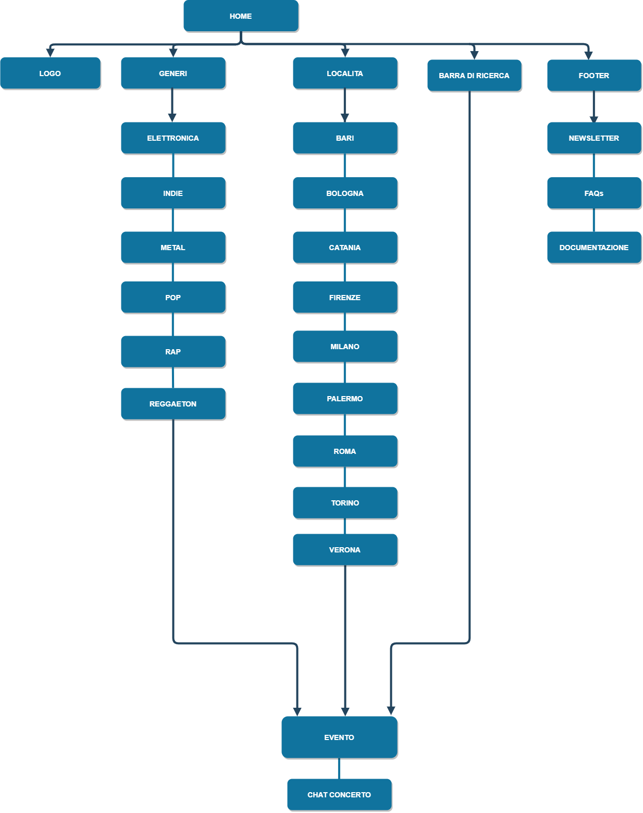
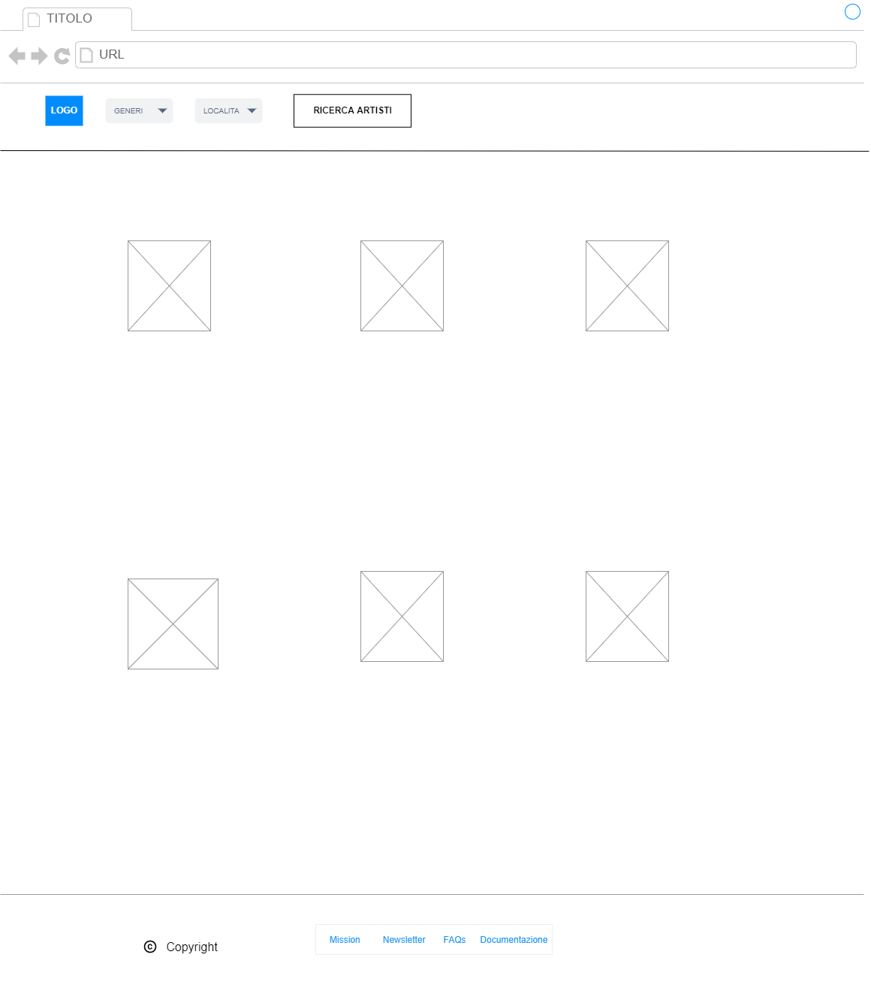
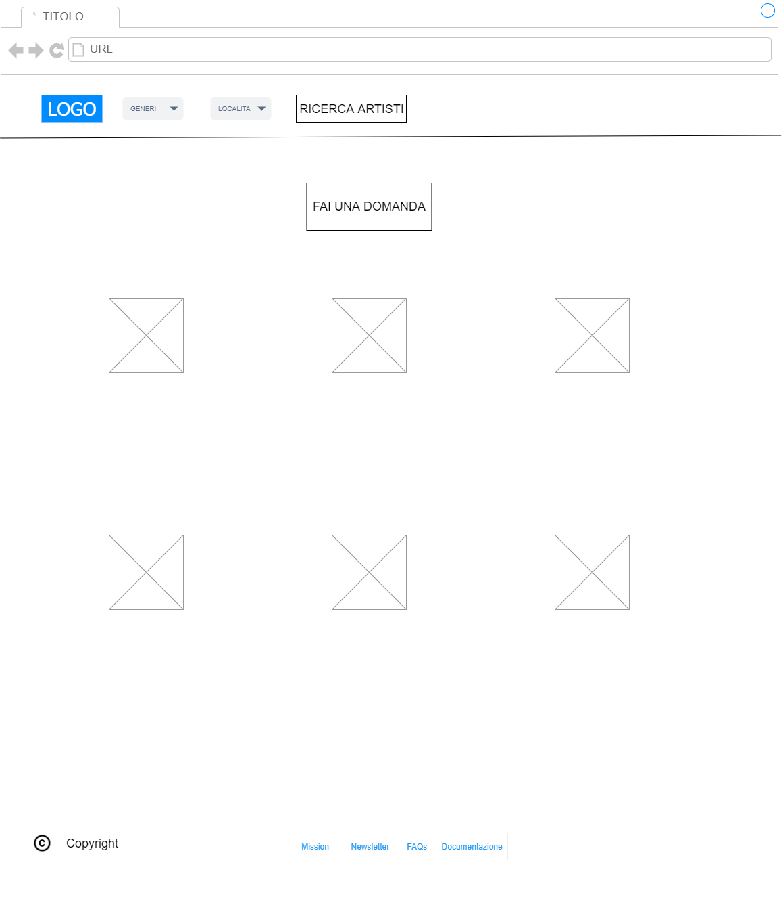
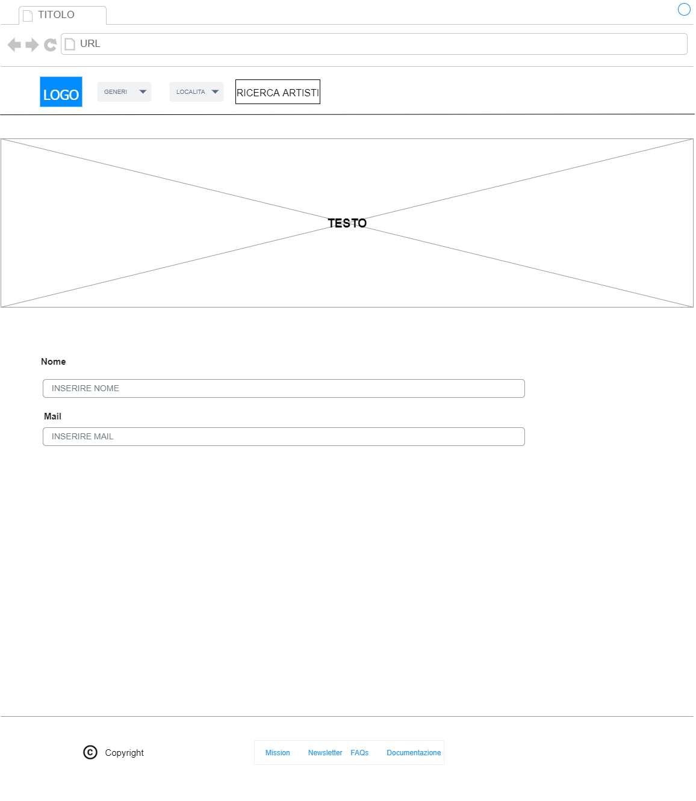
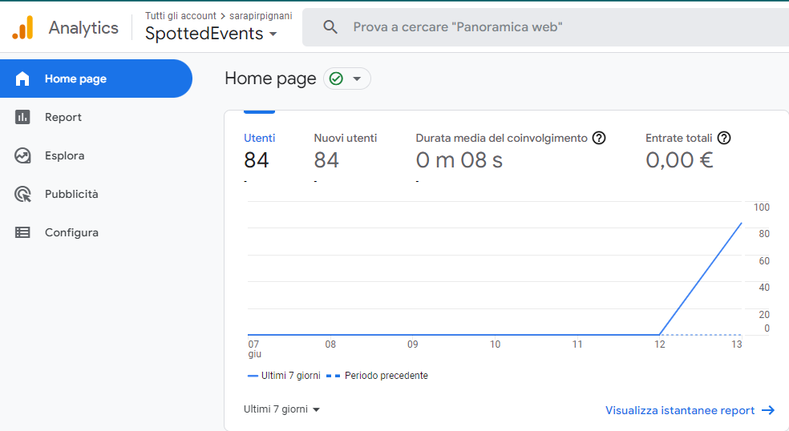
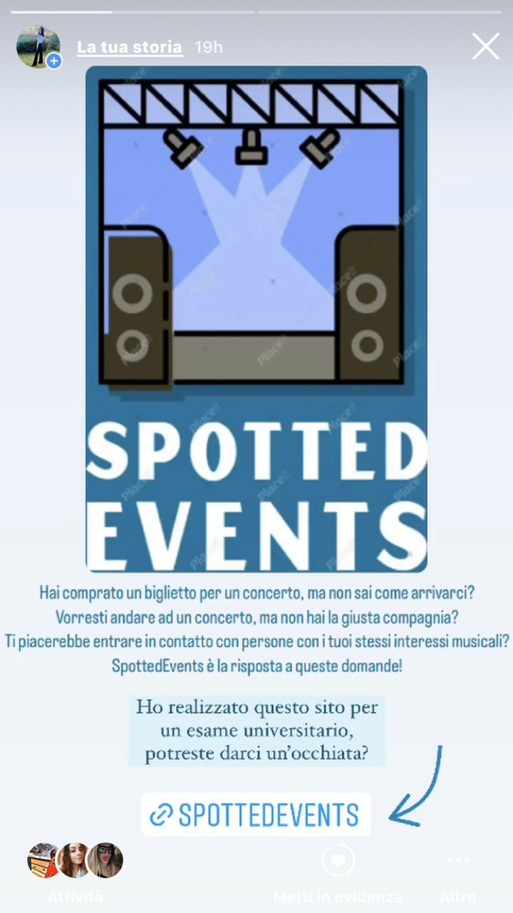
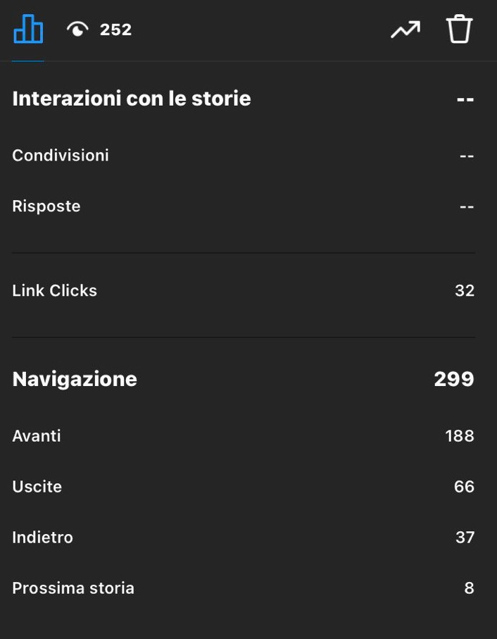

Documentazione
Abstract
Hai comprato un biglietto per un concerto ma non sai come arrivarci?Vorresti andare ad un concerto, ma non hai la giusta compagnia?
Ti piacerebbe entrare in contatto con persone con i tuoi stessi interessi musicali?
SpottedEvents è la risposta a queste domande.
Inserendo il codice del tuo biglietto, avrai accesso ad una chat in cui potrai entrare a contatto con persone che andranno al tuo stesso concerto
Project Management Plan
1. Benchmarking
1. Obiettivi:L'obiettivo di SpottedEvents è di creare un senso di community e un avvicinamento differente all'artista attraverso un aggiornamento costante degli eventi che organizza. Inoltre, si pone l'obiettivo di rendere l'evento più piacevole e confortevole all'utente
2. Target utente:
Il sito è rivolto a un pubblico di età compresa tra i 16 e i 35 anni, in particolare a coloro che hanno acquistato un biglietto per un concerto
3. Competitors:
- Siti che affrontano lo stesso tema: tastebuds
Tastebuds è un'app di incontri, il cui fine è quello di far conoscere persone con gli stessi gusti musicali
- Siti che offrono servizi simili ma su un target utente diverso: Fandom
Fandom è un sito nel quale gli utenti possono rimanere aggiornati, tramite la lettura di articoli, e discutere, attraverso chat specifiche, sui loro film, videogiochi e anime preferiti
2. Struttura e layout
1. Architettura del sito
2. Wireframes



3. Look and Feel
- Per la scelta delle Font mi sono servita di Google Fonts. In particolare, ho utilizzato "Source Sans Pro", sans-serif: una font senza grazie adatta ai testi brevi e su schermo, per rendere la lettura dell'utente più scorrevole
- Per la scelta della palette colori mi sono servita di Adobe Color. I colori predominanti sono diverse tonalità di azzurro, colore spesso utilizzato per i social network.
In particolare ho utilizzato: #10739E per il menu di navigazione e i bottoni, #67B9FF per lo sfondo del body, #F7F9FA per il footer, e infine white e black per le scritte.
- Effetti particolari: I bottoni cambiano colore nel momento al passaggio del cursore (in CSS ":hover"); nella home page il riquadro con l'introduzione cambia al passaggio del cursore (in CSS ":hover")
- Per la scelta delle immagini mi sono servita di Google Immagini. In particolare, per evitare di violare le normative sul copyright, ho selezionato solamente quelle con le Licenze Creative Commons.
Ogni immagine rappresenta il genere musicale, la località o l'artista a cui fa riferimento.
3. Linguaggi e strumenti
1. Linguaggi- Linguaggio di markup HTML
- Linguaggio per la grafica web CSS
- Linguaggio di programmazione Javascript
2. Strumenti
- Sublime Text 3 per la scrittura del codice
- Google Chrome per la visualizzazione del sito
- Google Fontsper la scelta delle font
- Github per la pubblicazione del sito
- Bootstrap per la grafica
- App.diagrams.net per la creazione dei wireframes e dell'archietettura del sito
- Adobe Color per la scelta dei colori
- Canva per la creazione delle immagini rappresentative di ogni sezione del sito
- FontAwesome per la scelta dell'icona del menu ad "hamburger"
Communication Strategy
1. BackgroundNonostante al giorno d'oggi esistano siti simili o con finalità simili, SpottedEvents si differenzia dai soliti siti di incontri perché è indirizzato a mettere in contatto persone con gusti e interessi musicali affini, con cui condividere i più svariati eventi. Inoltre, il sito permette di essere sempre aggiornati sulle ultime novità dei nostri artisti preferiti, tramite il servizio di newsletter. Unico punto a sfavore è che il sito è fruibile solo tramite browser e non tramite applicazione, non permettendo l'arrivo immediato delle notifiche all'utente.
2. Obiettivi comunicativi
SpottdEvents nasce con l'intento di mettere in relazione persone che andranno ad uno stesso evento, per permettere loro di condividere un'esperienza musicale differente dalle altre già vissute.
3. Target audience e messaggio
SpottedEvents è destinato a un pubblico di persone che ha effettivamente comprato il biglietto per un determinato evento. Il target comprende un utente di età compresa tra i 16 e i 35 anni, un target solitamente raggiunto tramite le fanpage sui social network.
Per quanto riguarda gli utenti secondari e casuali, questi potranno essere spronati a comprare un biglietto pur di poter avere accesso alla chat. In più, questi potranno accedere alla newsletter anche senza essere in possesso di un biglietto.
L'intento del sito è quello di permettere agli utenti di avvicinarsi maggiormente all'artista e al suo fandom.
L'auspicio è che venga apprezzata la novità e l'usabilità del sito, che l'utente impari a muoversi al suo interno e che partecipi attivamente alle chat di gruppo.
4. Promozione
Il sito è stato promosso tramite la condivisione del link ai contatti di Whatsapp e tramite la pubblicazione di stories su Instagram
5. Valutazione dei risultati
Per valutare il successo del sito mi sono posta l'obiettivo di raggiungere 50 visualizzazioni al sito web da utenti unici


